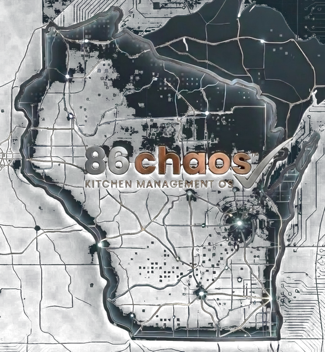

Prep List68%
- ✓ Brisket10 lb
- ✓ Pico de Gallo2 qt
- ○ Roasted Red Peppers1 pan
- ○ Chicken Stock2 pans
Kitchen Management OS for independent restaurants
86 Chaos brings prep, schedules, inventory, 86 alerts, recipes, reminders, and team communication into one operations hub so your kitchen runs smoother and your team stays in sync.
86 Alert
Out of stock. Removed from prep and menu visibility.
Jay: Ribeye is out. Sub NY Strip.
Maria: Oil pan dumped. Board updated.

Designed for real shifts, not corporate fantasy.
Real Problems. Real Solutions.
Prep lives on paper. 86s live in someone’s head. Reminders live in texts from three days ago.
Solution: One clean hub for the daily work your team actually needs.
Guests order something you ran out of thirty minutes ago. Now the team is scrambling.
Solution: 86 alerts, inventory visibility, and menu-impact thinking in one flow.
Two people prep the same thing because nobody knows what was already handled.
Solution: Smarter prep lists with quantities, stations, and completion tracking.
Constant check-ins steal time from ordering, coaching, training, and fixing the real fires.
Solution: Team updates, shared reminders, and role-based visibility without the bottleneck.
Everything you need. In the flow of service.
The margins are thin. The impact is real.
Real app screens
Use 86 Chaos on phones, tablets, or desktops. The app keeps the high-pressure parts of the kitchen visible: schedules, prep, recipes, invoices, financials, maintenance, and the reminders that keep the day from unraveling.

Clock in, view shifts, request off, trade shifts, and keep the schedule in everyone’s pocket.
Founder Beta
We’re looking for independent restaurants, bars, and kitchens that want to help shape 86 Chaos before full launch.
Use the beta without a credit card.
Founder Beta restaurants receive 50% off their first paid year.
Get early access to new features in your selected plan.
Tell us what works, what is missing, and what should change.
No payment required during Founder Beta.
Give $100, get $100 after the referred restaurant becomes a paying customer.
Planned launch pricing
Annual plans available: get 2 months free. Founder Beta restaurants get 50% off the first paid year.
$49/month
per location
$99/month
per location
$179/month
per location
$299/month
per location
Refer another restaurant that becomes a paying customer and both restaurants receive a $100 account credit.
Active beta restaurants with 2 successful paid referrals may qualify for 25% off year two.
Apply for Founder Beta
Tell us a little about your restaurant and what part of the daily operation gives your team the most trouble. The first beta wave is focused on independent kitchens that want practical tools, not bloated corporate software.
FAQ
Yes. Founder Beta includes 90 days free with no credit card required.
Beta restaurants can choose a plan and receive 50% off their first paid year after launch.
No. 86 Chaos is built for the operational work around the POS: prep, schedules, 86 alerts, recipes, reminders, inventory, team updates, and manager visibility.
Yes. 86 Chaos is designed for phones, tablets, and desktops so the team can use it where the work happens.